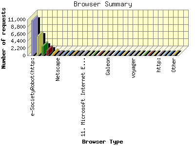
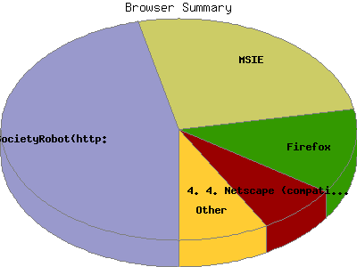

Report generated by Analog 6.0 and Report Magic 2.21
|
Web Server Statistics for "Harish Narayanan (hnarayan) - December 2005" Report generated by Analog 6.0 and Report Magic 2.21 |
The Browser Summary identifies the most popular web browsers used to visit
this site.
Browsers are broken down by recognized categories such as
Netscape Navigator/Communicator, Microsoft Internet Explorer, WebTV, Opera
and the like. Within each category is also a subgroup by version number
such as 'MSIE 5.0' or 'Netscape 4.5'.
This report shows all results. This report is sorted by number of requests.


| Browser Type | Number of requests | Number of bytes transferred | Percentage of the bytes | Percentage of the requests | |
|---|---|---|---|---|---|
| 1. | e-SocietyRobot(http: | 10,638 | 132.894 MB | 16.45% | 46.36% |
| e-SocietyRobot(http://www | 10,638 | 132.894 MB | 16.45% | 46.36% | |
| 2. | MSIE | 5,923 | 377.180 MB | 46.70% | 25.81% |
| MSIE/5 | 1,652 | 77.527 MB | 9.60% | 7.20% | |
| MSIE/6 | 4,270 | 299.651 MB | 37.10% | 18.61% | |
| MSIE/4 | 1 | 1.820 KB | 0.00% | 0.00% | |
| 3. | Firefox | 2,838 | 136.429 MB | 16.89% | 12.37% |
| Firefox/1 | 2,820 | 135.817 MB | 16.82% | 12.29% | |
| Firefox/0 | 18 | 627.543 KB | 0.08% | 0.08% | |
| 4. | Netscape (compatible) | 1,667 | 64.275 MB | 7.96% | 7.26% |
| 5. | msnbot | 663 | 26.305 MB | 3.26% | 2.89% |
| msnbot/1 | 480 | 16.243 MB | 2.01% | 2.09% | |
| msnbot/0 | 183 | 10.062 MB | 1.25% | 0.80% | |
| 6. | Netscape | 171 | 14.396 MB | 1.78% | 0.74% |
| Netscape/7 | 166 | 14.379 MB | 1.78% | 0.72% | |
| Netscape/4 | 5 | 17.486 KB | 0.00% | 0.02% | |
| 7. | Googlebot | 146 | 4.203 MB | 0.52% | 0.64% |
| Googlebot/2 | 146 | 4.203 MB | 0.52% | 0.64% | |
| 8. | Opera | 142 | 11.870 MB | 1.47% | 0.62% |
| Opera/8 | 134 | 7.133 MB | 0.88% | 0.58% | |
| Opera/7 | 7 | 2.701 MB | 0.33% | 0.03% | |
| 9. | Mozilla | 141 | 3.257 MB | 0.40% | 0.61% |
| Mozilla/1 | 139 | 3.243 MB | 0.40% | 0.61% | |
| Mozilla/0 | 2 | 14.364 KB | 0.00% | 0.01% | |
| 10. | Googlebot-Image | 87 | 0.000 B | 0.00% | 0.38% |
| 11. | Microsoft Internet Explorer | 85 | 340.739 KB | 0.04% | 0.37% |
| 12. | Safari | 68 | 4.826 MB | 0.60% | 0.30% |
| Safari/416 | 49 | 2.851 MB | 0.35% | 0.21% | |
| Safari/312 | 14 | 1.282 MB | 0.16% | 0.06% | |
| Safari/125 | 4 | 390.147 KB | 0.05% | 0.02% | |
| 13. | FAST-WebCrawler | 50 | 290.948 KB | 0.04% | 0.22% |
| FAST-WebCrawler/3 | 50 | 290.948 KB | 0.04% | 0.22% | |
| 14. | Konqueror | 38 | 654.159 KB | 0.08% | 0.17% |
| Konqueror/3 | 38 | 654.159 KB | 0.08% | 0.17% | |
| 15. | ichiro | 32 | 1.502 MB | 0.19% | 0.14% |
| ichiro/2 | 32 | 1.502 MB | 0.19% | 0.14% | |
| 16. | Galeon | 24 | 592.847 KB | 0.07% | 0.10% |
| Galeon/1 | 24 | 592.847 KB | 0.07% | 0.10% | |
| 17. | Windows-Media-Player | 23 | 2.461 MB | 0.30% | 0.10% |
| 18. | MultiText | 19 | 340.408 KB | 0.04% | 0.08% |
| MultiText/0 | 19 | 340.408 KB | 0.04% | 0.08% | |
| 19. | Yahoo-MMCrawler | 13 | 82.072 KB | 0.01% | 0.06% |
| 20. | DA | 12 | 4.137 MB | 0.51% | 0.05% |
| 21. | voyager | 12 | 114.007 KB | 0.01% | 0.05% |
| voyager/1 | 12 | 114.007 KB | 0.01% | 0.05% | |
| 22. | NutchCVS | 12 | 24.605 KB | 0.00% | 0.05% |
| NutchCVS/0 | 12 | 24.605 KB | 0.00% | 0.05% | |
| 23. | Gigabot | 11 | 179.972 KB | 0.02% | 0.05% |
| Gigabot/2 | 11 | 179.972 KB | 0.02% | 0.05% | |
| 24. | StarDownloader | 10 | 8.776 MB | 1.09% | 0.04% |
| 25. | envolk[ITS]spider | 10 | 18.203 KB | 0.00% | 0.04% |
| envolk[ITS]spider/1 | 10 | 18.203 KB | 0.00% | 0.04% | |
| 26. | http: | 10 | 29.250 KB | 0.00% | 0.04% |
| http://www | 10 | 29.250 KB | 0.00% | 0.04% | |
| 27. | Jakarta Commons-HttpClient | 8 | 81.660 KB | 0.01% | 0.04% |
| Jakarta Commons-HttpClient/3 | 8 | 81.660 KB | 0.01% | 0.04% | |
| 28. | Jyxobot | 6 | 60.482 KB | 0.01% | 0.03% |
| Jyxobot/1 | 6 | 60.482 KB | 0.01% | 0.03% | |
| 29. | ia_archiver | 6 | 162.631 KB | 0.02% | 0.03% |
| 30. | Jigsaw | 6 | 45.756 KB | 0.01% | 0.03% |
| Jigsaw/2 | 6 | 45.756 KB | 0.01% | 0.03% | |
| 31. | McBot | 6 | 56.702 KB | 0.01% | 0.03% |
| McBot/5 | 6 | 56.702 KB | 0.01% | 0.03% | |
| 32. | MOZILLA | 5 | 9.160 KB | 0.00% | 0.02% |
| MOZILLA/5 | 5 | 9.160 KB | 0.00% | 0.02% | |
| 33. | W3C_Validator | 4 | 77.550 KB | 0.01% | 0.02% |
| W3C_Validator/1 | 4 | 77.550 KB | 0.01% | 0.02% | |
| 34. | QuickTime | 4 | 8.145 MB | 1.01% | 0.02% |
| 35. | RMA | 3 | 2.118 MB | 0.26% | 0.01% |
| 36. | Sensis Web Crawler (search_comments\at\sensis\dot\com\dot\au) | 3 | 8.271 KB | 0.00% | 0.01% |
| 37. | updated | 3 | 8.223 KB | 0.00% | 0.01% |
| updated/0 | 3 | 8.223 KB | 0.00% | 0.01% | |
| 38. | Thumbnail.CZ robot 1.1 (http: | 3 | 5.496 KB | 0.00% | 0.01% |
| Thumbnail.CZ robot 1.1 (http://thumbnail | 3 | 5.496 KB | 0.00% | 0.01% | |
| 39. | NG | 3 | 4.335 KB | 0.00% | 0.01% |
| NG/2 | 3 | 4.335 KB | 0.00% | 0.01% | |
| 40. | Speedy Spider (Beta | 2 | 3.641 KB | 0.00% | 0.01% |
| Speedy Spider (Beta/1 | 2 | 3.641 KB | 0.00% | 0.01% | |
| 41. | Wget | 2 | 109.547 KB | 0.01% | 0.01% |
| Wget/1 | 2 | 109.547 KB | 0.01% | 0.01% | |
| 42. | ELinks | 2 | 14.364 KB | 0.00% | 0.01% |
| ELinks/0 | 2 | 14.364 KB | 0.00% | 0.01% | |
| 43. | Lynx | 2 | 11.898 KB | 0.00% | 0.01% |
| Lynx/2 | 2 | 11.898 KB | 0.00% | 0.01% | |
| 44. | LWP::Simple | 2 | 1.832 KB | 0.00% | 0.01% |
| LWP::Simple/5 | 2 | 1.832 KB | 0.00% | 0.01% | |
| 45. | MSNPTC | 2 | 3.641 KB | 0.00% | 0.01% |
| MSNPTC/1 | 2 | 3.641 KB | 0.00% | 0.01% | |
| 46. | Java | 2 | 90.029 KB | 0.01% | 0.01% |
| 47. | xirq | 2 | 3.641 KB | 0.00% | 0.01% |
| xirq/0 | 2 | 3.641 KB | 0.00% | 0.01% | |
| 48. | NetResearchServer | 2 | 3.641 KB | 0.00% | 0.01% |
| NetResearchServer/3 | 2 | 3.641 KB | 0.00% | 0.01% | |
| 49. | Industrious bit-pushing elves | 2 | 938.247 KB | 0.11% | 0.01% |
| 50. | MJ12bot | 2 | 3.664 KB | 0.00% | 0.01% |
| MJ12bot/v1 | 2 | 3.664 KB | 0.00% | 0.01% | |
| 51. | ConveraCrawler | 2 | 3.641 KB | 0.00% | 0.01% |
| ConveraCrawler/0 | 2 | 3.641 KB | 0.00% | 0.01% | |
| 52. | silk | 1 | 1.832 KB | 0.00% | 0.00% |
| silk/1 | 1 | 1.832 KB | 0.00% | 0.00% | |
| 53. | Y!OASIS | 1 | 174.000 B | 0.00% | 0.00% |
| 54. | Lycos_Spider_(modspider) | 1 | 4.582 KB | 0.00% | 0.00% |
| 55. | DataFountains | 1 | 1.820 KB | 0.00% | 0.00% |
| DataFountains/DMOZ | 1 | 1.820 KB | 0.00% | 0.00% | |
| 56. | onCHECK Linkchecker von www.scientec.de fuer www.onsinn.de | 1 | 1.832 KB | 0.00% | 0.00% |
| 57. | Xenu Link Sleuth 1.2g | 1 | 0.000 B | 0.00% | 0.00% |
| 58. | Poirot | 1 | 1.832 KB | 0.00% | 0.00% |
| 59. | PageBitesHyperBot | 1 | 6.382 KB | 0.00% | 0.00% |
| PageBitesHyperBot/600 | 1 | 6.382 KB | 0.00% | 0.00% | |
| 60. | TurnitinBot | 1 | 1.820 KB | 0.00% | 0.00% |
| TurnitinBot/2 | 1 | 1.820 KB | 0.00% | 0.00% | |
| 61. | UP.Browser | 1 | 4.582 KB | 0.00% | 0.00% |
| UP.Browser/6 | 1 | 4.582 KB | 0.00% | 0.00% | |
| 62. | libwww-perl | 1 | 8.591 KB | 0.00% | 0.00% |
| libwww-perl/5 | 1 | 8.591 KB | 0.00% | 0.00% | |
| 63. | SynooBot | 1 | 1.820 KB | 0.00% | 0.00% |
| SynooBot/0 | 1 | 1.820 KB | 0.00% | 0.00% | |
| 64. | findlinks | 1 | 4.607 KB | 0.00% | 0.00% |
| findlinks/1 | 1 | 4.607 KB | 0.00% | 0.00% | |
| 65. | contype | 1 | 84.320 KB | 0.01% | 0.00% |
| 66. | CUTEPDF_SDK | 1 | 445.092 KB | 0.05% | 0.00% |
| 67. | ie | 1 | 28.457 KB | 0.00% | 0.00% |
| ie/5 | 1 | 28.457 KB | 0.00% | 0.00% | |
| 68. | Silk | 1 | 1.832 KB | 0.00% | 0.00% |
| Silk/1 | 1 | 1.832 KB | 0.00% | 0.00% | |
| 69. | webcollage | 1 | 8.341 KB | 0.00% | 0.00% |
This report was generated on January 5, 2006 20:48.
Report time frame December 1, 2005 00:03 to December 31, 2005 23:42.
| Web statistics report produced by: | |
 Analog 6.0 Analog 6.0 |  Report Magic 2.21 Report Magic 2.21 |